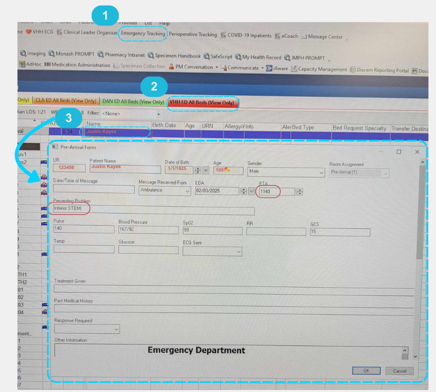

The first procedure you will learn about is the LHC. Following this will be CRM (labs 5, 6, 7) and structural cases (labs 1 and 2, usually only on Mon and Wed). Don't let your knowledge skip a beat — keep reading to understand the procedures in the cath lab!
Left Heart Catheterisations (LHC)
Indications/purpose
Assess arteries after patient presents with chest pain, positive echo stress test, cardiac arrest etc.
May perform treatment on the spot or leave complicated cases (e.g., multiple severe stenosis) to be discussed at the conference
5 views of LCA and 3 views of RCA are always performed in order to assess the heart in its entirety prior to any intervention
Key Actions
Referencing images❗
References are used as 'roadmaps' so the drs can more easily reaccess the vessel when switching wires/catheters later for intervention.
Reference the vessel at peak contrast enhancement, whilst capturing any regions of stenosis or other regions of interest...
When there is difficulty inserting the wire: reference when contrast is strongest at the distal end of the vessel.
When the dr has difficulty pushing the wire up the radial artery: reference the pathway of the vessel if an acquisition is taken to help them.
When another acquisition is taken post angioplasty/ballooning: reference this as it is the most recent/accurate version of the vessel.
Fluorosaving runs when asked (e.g. wired a vessel)
Move filter to block glare
Label images post stent insertion and when GTN is administered (or take notes on the run number)
Listen out for GTN or nitrate and the stent size used (otherwise check the cardio physiologist notes on EMR/clarify with them)
For the spider view, (most doctors are happy for you to) collimate in and if pt is >100kg most likely need to change acquisition setting to BMI+! For post-dilation using STENTBOOST/CLEAR the doctors will cone in themselves.
Predilate the vessel using a balloon to push the plaque away.
Deploy a stent to keep the vessel open.
Post-dilate with another balloon to ensure the stent is properly expanded.
Bare-metal Stent: Used for non-compliant patients since it has a shorter duration of dual antiplatelet therapy and has less thrombosis risk.
Drug-eluting Stent: Releases agents over 9-12 months; effective in smaller vessels.
Drug-eluting/coating Balloon: Releases agent rapidly (within minuntes) and is absorbed by tissue. Agent is typically a cytostatic (anti-proliferative) drug, such as paclitaxel or sirolimus. Effective in smaller vessels which may not be suitable for normal stenting (< 2mm) or for opening a stenosed stent.
Label final image (preferrably without wire in) as per this format: Post Stent (Vessel): 2 x 23mm BRAND
Left Ventriculogram/Aortogram
A pigtail catheter is advanced into the left ventricle (for LVgram) or positioned in the aortic root (for aortogram) to assess anatomy and hemodynamics.
LV: Calculate ejection fraction; assess for mitral regurgitation.
A: Check for aortic aneurysm, regurgitation, and dissection.
Prepare the pressure injector screen with appropriate protocol - check with Dr (room 4). Nurses inside room will typically set the injector up.
Measures severity of stenosis; calculates blood flow impact.
Adenosine always administered prior to FFR to mimick heart in a stressed state and induce hyperemia.
If FFR ≤ 0.8, intervention may be necessary. FFR of 1 means the pressure before and after the stenosis is equal, thus normal.
Will usually administer GTN prior, but no need to label as it is standard.
Get ready to change screens when asked.
OCT (Optical Coherence Tomography)
Performed pre-stenting to identify area of stenosis and dimensions
Useful for differentiating thrombus from plaque.
Also performed post-stenting and dilation to check apposition of the stent
Contrast injection with pressure setting < 300 PSI is used
While the contrast is injected to fill the vessel, the cather is pulled back, obtaining the image (the contrast replaces the blood to get an accurate representation of the interior of the vessel).
Get ready to change screens when asked.
IVUS (Intravascular Ultrasound)
Provides an internal view of the inner lumen, plaque and vessel wall.
Helps in deciding stent size and length, especially in cases of diffuse disease affecting lumen clarity.
Get ready to change screens when asked.
RHC
Diagnose pulmonary hypertension, obtain pressures in the pulmonary circulation (SVC, RA, RV, PA, cardiac output)
Usually performed via femoral vein access, IVC -> RA → RV → PA → PCWP using the natural blood flow.
The Swan-Ganz catheter which has a balloon at the tip enables "wedging" into a distal pulmonary artery branch for pulmonary capillary wedge pressure (PCWP/PAWP) measurement.
Ice is required to keep the saline cold for cardiac output measurement. The temperature change is detected by a thermistor at the catheter tip in the pulmonary artery, and cardiac output (CO) is calculated.
Once the case is finished, pour the ice out and leave on top of the sink to dry
No specific action needed during, but prepare room with blues on table (for fem access) and rotate the tube to 45 deg. If a LHC is also being performed (which is usual) then also prepare the arm board.
IMR (Index of Microcirculatory Resistance)
Used when all the major arteries are deemed normal, so the cause of symptoms may be smaller vessels.
Helps identify spasms or decreased flow/function in smaller vessels.
Adenosine is administered to induce hyperaemia.
Normal IMR result is < 25.
ACH Challenge
Acetylcholine challenge.
Used to diagnose microvascular dysfunction or endothelial dysfunction. Similar to IMR, used when the pt has chest pain or angina but does not have significant stenosis visible on angiography.
Stimulates the endothelial muscarinic receptors, leading to either vasodilation (in a healthy endothelium) or vasoconstriction/spasm (in dysfunctional endothelium).
Like GTN, label post ACH.
Rotablation
A technique used to break down heavily calcified plaque in the arteries when ballooning is not possible.
It involves a high-speed, diamond-tipped burr that rotates at 140,000–180,000 RPM, grinding the hard plaque into microscopic particles that are safely absorbed by the body (unlike ballooning/stenting which just pushes the plaque aside).
Diamond is one of the hardest materials known, making it highly effective at cutting through tough, calcified plaque without wearing down and heating up.
Prepares the artery for stenting by improving vessel compliance and reducing resistance.
Common complications include dissection and even perforation.
Fluorosave all runs where they rota.
Intravascular Lithotripsy
A technique that uses ultrasonic shockwaves
A specialized balloon catheter is inserted into the calcified artery and inflated at low pressure.
The balloon emits shockwaves, which travel through the vessel wall and selectively fracture calcium deposits without damaging soft tissue.
Once the calcium is cracked, the artery becomes more compliant, allowing for easier stent deployment and vessel expansion.
Typically used when calcium is deep within the vessel wall, and has several advantages over rotablation
Less traumatic than rotablation (which mechanically grinds plaque).
Decreased risk of dissection or perforation
Effective for deep-wall calcium and long sections of calcification
Shockwave IVL (by Shockwave Medical) is the most widely used IVL system.
Graft Studies
A graft study is performed to evaluate the effectiveness and patency (openness) of grafts, following symptoms that could be related to graft stenosis. It helps assess how well the grafts are functioning and if further reintervention is required.
Set up as per femoral access (more straightforward and stable route to access grafts e.g. LIMA)
Get ready to save references to use as roadmaps to access the grafts which can be tricky to get into!
Occassionally may ask to bring up previous imaging on their screen inside as well to use as a roadmap - login into PC usually closest to the sony screen and set up as Sony 1.
QCA (Quantitative Coronary Analysis)
Performed in syngovia
Measures the degree of stenosis retrospectively.
Process: Click the angio tab, calibrate vessel based on catheter size, select area of interest, create report (shows diameter of stenosis), and save.
Call a supervisor to perform
QFR (Quantitative Flow Ratio)
Performed in syngovia
FFR without need of pressure wires
Measures the degree of stenosis retrospectively
Call a supervisor to perform
STEMI Cases
Performed in Lab 4 after hours, otherwise during the day whichever lab is free next or has the shortest list
Key Actions
As per normal LHC set up but also put a pt gown, blue bag (for pt belongings) and shaver on the table.
Set up the Siemens Artis first since they will start screening quickly after pt transfer! Then do EMR/excel.
Check EMR emergency tracking for pt details (may be under pre-arrival or WR AV). Double-click name for UR number and start filling in Siemens WP/EMR rad dose IF the pt has the correct "encounter"/been arrived at VHH.

When transferring pt over, float the table away if ambos adjust their trolley!
When they take the bed away, make sure the don't steal our patslide TT
Sony screen: just put unknown (unlikely to need recording)
Have a pen and paper handy to jot down runs with GTN, aspiration, stents etc.
Will be more fast-paced, so try to get references as the acquisitions are being taken.
Pt going into cardiac arrest:
Call a code blue when notified by the consultant
Dial 2222 "Code blue level 4 cathlab lab [e.g. 4]"
Move the tube SID up to give more room for CPR, but don't move it all the way out since they still need to keep going with the procedure as quick as possible!
Watch for people going into the room without lead - notify them and give them lead to put on
Scribe on paper time of shocks, medications given
Afterwards, double-check settings since people may have accidently touched the screen inside ( e.g. frame rate changed to 30 f/s from 10)
Stay calm and keep cathing üòé
Be vigilant, communicate when unsure and pay attention to ECG, pressure and sats changes!
After Hours
The cardiology reg will make the decision to activate the STEMI team. Once this happens, both zebra phones will make an alarm, and Switch will start calling all memebers of the team (will ring and state ETA of pt arrival).
Will just be you, 1 cardio tech, 2-3 nurses, consultant and fellow.
DO NOT let ED bring the pt up before at bare minimum 2 senior nurses have arrived - ideally want the whole team just in case pt arrests and for a smoother transfer!
You will have time to get ready since all other staff will be at the hospital in ~30min. First, turn on the machine (~4 min) and set up the room (put pedal in, turn screens on, check if everything is working properly). Then if you have time:
Write on a sticky note for the tech: pt name, UR, age/gender, type of STEMI, medical history and any meds given (e.g. aspirin, heparin, morphine). If the pt has arrived before the tech, note down the pt arrival time and time of transfer as well.
Write on the whiteboard in the room the same (help nurses save some time)
^Make sure though you have the correct pt!
Cardiac Rhythm Management (CRM)
Indications/Purpose
Diagnose arrhythmia
Record any abnormal electrical signals
Insert PPMs, loop monitors etc.
Key Actions
Change screen display as per procedure step (use cheatsheet)
Prepare the room for femoral access for ablations
Bring up contrast shots (e.g. subclavian vein for PPMs)
Pt is under GA (takes a while to set up), only bring the tube in once anaesthetist has the pt under!
Set up as per femoral access:
2 blueys on table (catch blood/prep solution from femoral access)
Have US machine and TOE (if crossing transeptally), enter pt details onto the TOE.
After pt is asleep, move the tube to ~75 deg (MORE than 45 for minimal rad dose to anaesthetist) BEFORE draping.
Used to treat abnormal heart rhythms by ablating selective areas of heart tissue.
Requires precision in locating arrhythmogenic areas - may be mapped using EPS first
Common types of ablations:
RFA (Radio-frequency;; heat)
PFA (Pulse-frequency; electrical signals)
Cyroablation (cold energy = scar tissue)
Will typically use TOE to scross the septum - save this image!
Main actions:
Setting up
Changing the screens as required (e.g. when they are crossing the septum, change to transeptal screen with TOE selected as Sony 1)
Switching between contrast shots on syngovia WP
Pacemakers
The pt is usually lightly sedated.
Set up:
Move control modules to the side where the PPM will be inserted - make sure to also change the orientation of the controls!!
Have a bluey (to place on pts pillow once they're over) and cap ready at the head of the bed.
Left-sided implants are preferred, as they are the nondominant side for most patients, and lead placement is relatively more straightforward.
Single (lead in only right ventricle) or dual (also in right atrium)
Atrial lead used to treat atrial arrhythmias or SA node impairement
Ventricular lead used to treat complete heart block or significant bradycardia
Biventricular (leads in both ventricles and right atrium) coordinates the ventricles contractions
Accessed via subclavian vein into the right atrium and/or ventricle. An initial contrast shot will be taken when accessing the subclavian vein - bring this up on the syngovia workplace!
Once the lead wire is inside the heart, it will be tested to verify proper location and that it works
Save final run with the leads and generator
Main action is setting up the room, changing screens and bringing up required contrast shots.
Loop Monitors
For continuous monitoring of the heart rhythm for pts with fainting episodes/sporadic arrhythmias/palpatations.
Built in electrodes to sense electrical impulses, signal amplification and data storage/transmission.
Battery lasts 3 years
No x-ray used! The device is implanted just under the skin in the left precordial region, with no leads needed to be inserted via veins.
Structural
Indications/Purpose
Abnormalities with the heart structure (walls/septum and valves)
Key Actions
Setting up the room for femoral access (e.g. get the TOE or US machines, turn tube 45 deg).
Save relevant images (e.g. getting access, referencing contrast shots, wire crossing valve, or device deployment)
Aortic stenosis in patients unsuitable for open-heart surgery
Procedure Steps
3 sites of access: Both femoral veins need to be accessed as well as the femoral artery on the opposite side to device delivery (need maximum space for the device and prevent perforation). Once access to one side is made, they may wire down the other side and use contrast to see the pathway of access! (Fluorosave/reference this image!). The tube will stay in the 45 deg angle for the whole procedure.
Temporary right ventricular cardiac pacing: A pacing lead is inserted venously into the RV.
The pacing lead serves as a backup, as AV block may be transitional post-procedure.
Rapid cardiac pacing is performed to reduce cardiac output to ensure balloon does not migrate out from annulus (transition point between left ventricle and aortic root)
Initial Aortogram taken - reference as per image below, at peak contrast enhancement with visible pathway between leaflets (useful roadmap when crossing the valve)
Catheter insertion: 2 pigtail catheters are positioned at the aortic root and LV (fluorosave crossing the valve!). A higher pressure gradient between the 2 indicates higher level of stenosis. A pigtail catheter which has holes throughout ensures more uniform distribution of contrast, decreasing chances of perforation since a high rate of contrast injection is used during deployment.
TAVI prosthesis deployment: The prosthesis is loaded in a special delivery catheter prepared by the rep. During deployment, its position can be adjusted/recaptured depending on brand. It may be self-inflating or need post-dilation depending on the model. The tech will enter the lab to pace the heart to 180 bpm to induce tacchychardia and stop cardiac output/motion for easier deployment. These 3 tools are used to assist deployment:
Gradients
Aortogram
Pigtail cather at aortic root
Save ALL runs with the device as they may review and use to decide positioning/back-track any issues.
Post Deployment DSA run: Dr will ask to change aqcuisition mode to DSA when ready. Used to check the femoral arteries for dissections and bleeds near the access point after deployment. A normal contrast run may be used on the opposite side.
Common Complications
Dissection/perforation in the femoral arteries (it's a large device!). Will inflate a balloon for a duration of time to stop blood flow. Contrast shot will be used to ensure balloon is correctly placed. Final DSA run will confirm if the perforation is resolved.
Stroke (especially when a lot of calcification is present during pre-dilation and pushed out)
ASD Closure (Atrial Septal Defect)
A hole between the heart's atrium.
Blood flows from Left Atrium to Right Atrium , increasing volume of blood in the RA, leading to increased work on the right side.
Results in mixing of oxygenated and deoxygenated blood.
Measure the balloon waist size so the appropriate sized device can be used. In the angio tab, calibrate first then using tools make meausrement.
Procedure Steps
Set up the room for femoral vein approach (blueys on table, TOE and maybe US machine, arm boards, II turned ~75deg)
Vascular Access:
Right femoral vein is accessed with a needle under US guidance.
A sheath is inserted into the vein over a guidewire.
Catheters are put in the sheath and advanced up to the heart.
Initial Haemodynamic measurements are taken by tech (incl RA, RV, PA, confirm left-right shunting of blood and assess pulmonary hypertension).
A catheter is advanced through the ASD from the RA to LA using fluoro and TOE. A guidewire is advanced through this and positioned in a stable location like the pulmonary vein.
Balloon sizing:
A measuring balloon catheter is inflated over the ASD to find the accurate size of the defect and confirm correct size of the selected closure device.
Measure the waist of the balloon (check guide book for instructions).
On Artis screen, go to angio tab, calibrate first, then using tools make measurement.
Device Deployment:
The delivery sheath (a larger catheter) is advanced over the guidewire and positioned across the ASD.
The closure device is loaded into the sheath.
The device is deployed in two stages:
The LA disc is deployed first by retracting the sheath and pulled against the foramen for positioning and stability.
The sheath is then further retracted to deploy the RA disc.
The device position is checked using fluoro and no residual left-to-right shunting with TOE.
PFO Closure (Patent Foramen Ovale)
Unlike ASD, NOT a congenital heart defect, but occurs when the foramen ovale doesn't close AFTER birth. More like a flap than an opening and typically much smaller, so no ballooning is required.
Otherwise same procedural steps, minus having to do the measurement !
MitraClip
Minimally-invasive procedure to treat mitral regurgitation
Set up the room with blueys on table, TOE, US machine. Leave C-arm in default AP position.
Procedure Steps
Catheter is inserted through the femoral vein and guided into the right atrium.
A transseptal puncture is made to access the left atrium.
Under TOE and fluoroscopy guidance, the MitraClip device is advanced through the catheter and positioned at the leaflets of the mitral valve.
The clip grasps and brings the anterior and posterior leaflets together, creating a double orifice to reduce regurgitation.